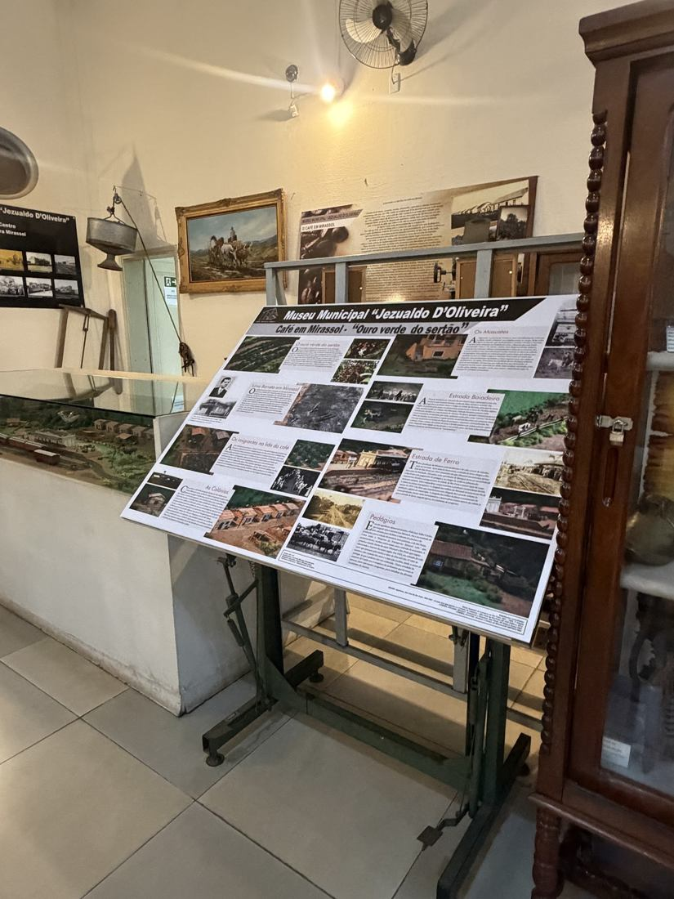
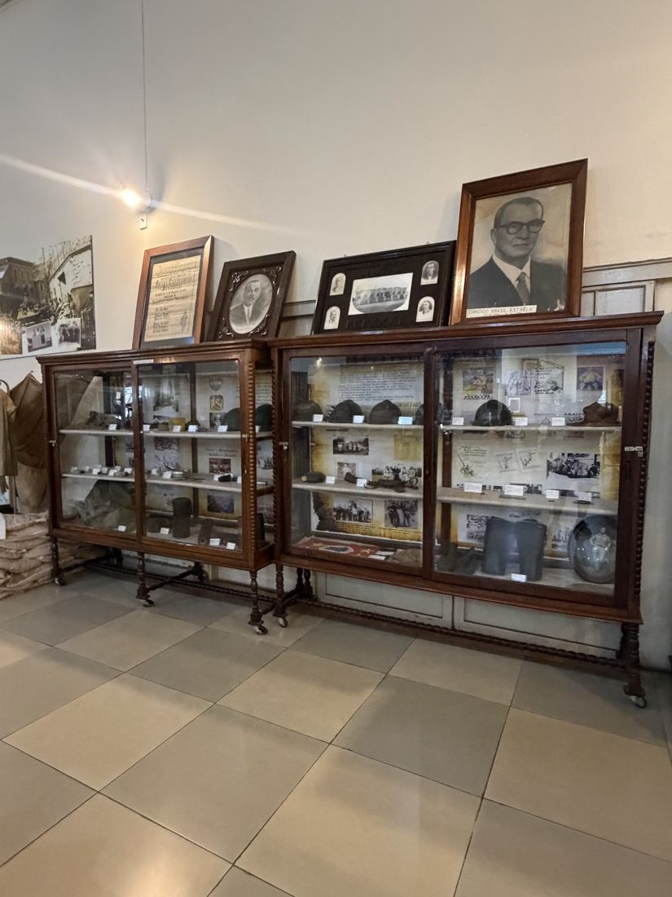

Início / Acervo
História e patrimônio cultural
O ciclo do café
O café e as transformações sociais, econômicas e culturais da região.
O café na história de Mirassol
O cultivo do café foi uma atividade importante na história da região, influenciando o trabalho, a economia e o desenvolvimento das cidades do interior paulista.


Uma atividade que marcou a região
O café influenciou a paisagem rural, o transporte e a vida de muitas famílias. Fotografias, documentos e objetos ajudam a contar como era a rotina naquele período.
Os materiais expostos no museu aproximam os visitantes dessas memórias e ajudam a compreender transformações ocorridas em Mirassol ao longo do tempo.
Textos introdutórios para fins educativos. Detalhes históricos devem ser conferidos com o museu antes da divulgação definitiva.